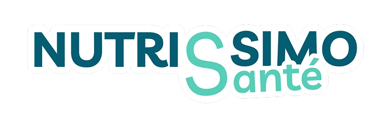

Nutrissimo
2026 – nowLead full-stack engineer, for Institut Pasteur de Lille
A multiplayer nutrition-education game that runs inside schools' Moodle courses. Students answer nutrition questions to move across a live game board, with a spectator mode and authoring tools for teachers. Rolling out to schools across France, around 3,000 students so far.
- Built across the whole Turborepo: the Flutter app, the Next.js admin and Supabase.
- Built the server-authoritative game engine: presence, reconnection after a dropped connection, and idempotent state updates.
- Implemented LTI 1.3 single sign-on so the game launches straight from Moodle.
Flutter, Next.js 15, Supabase Realtime, Turborepo, LTI 1.3, Cloudflare